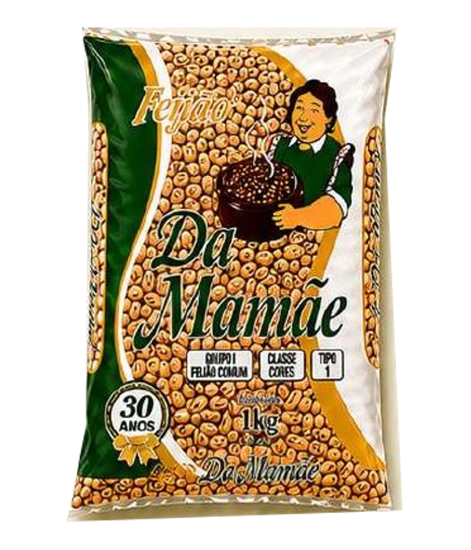
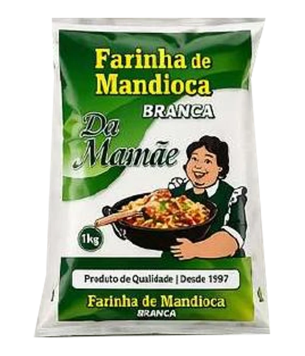
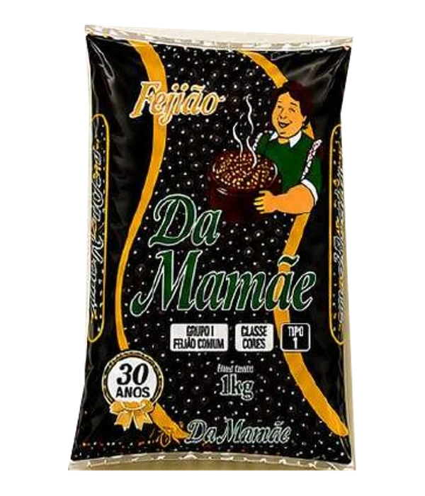
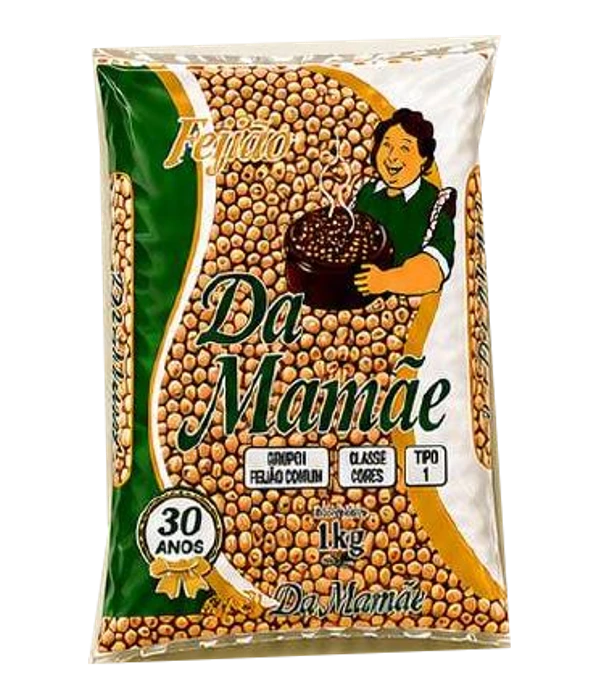
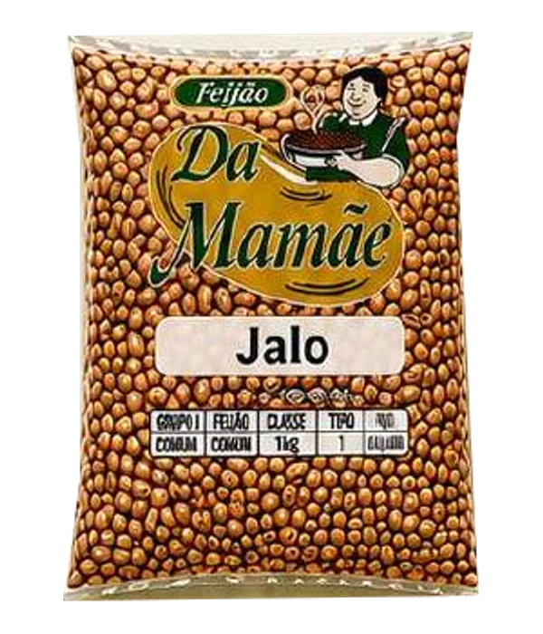
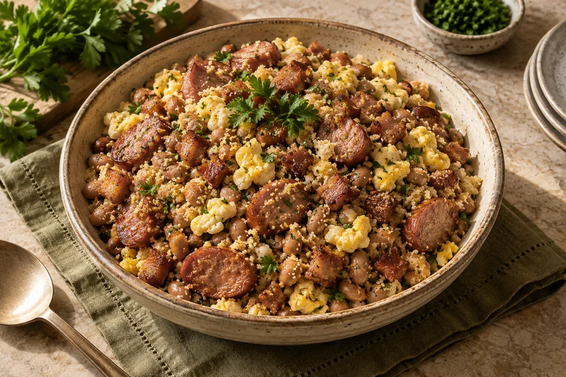
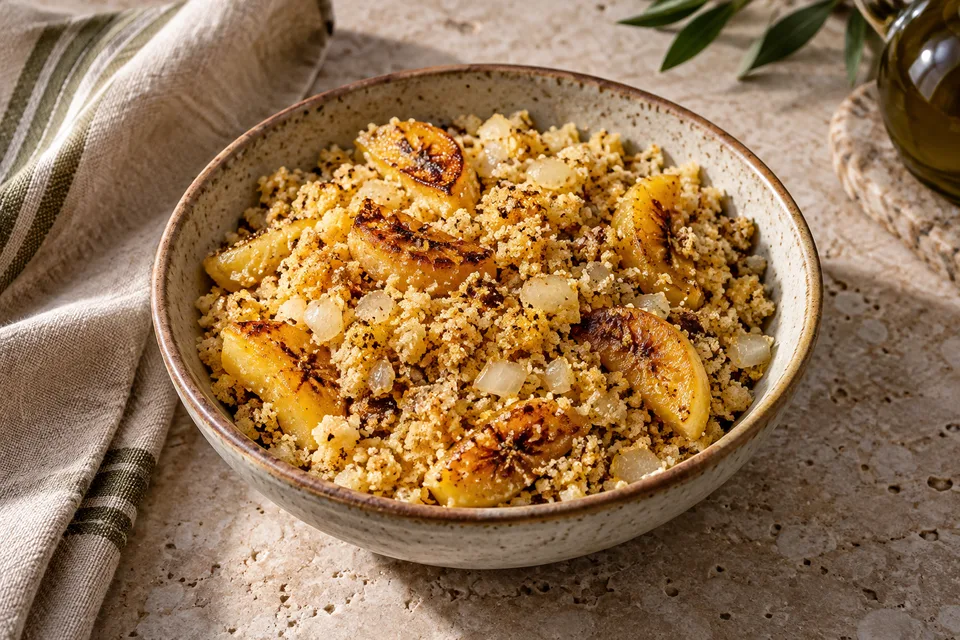

Da Mamãe · Feijão
Feijão Carioca
Feijão carioca Da Mamãe. Uma variedade para valorizar os sabores da cozinha brasileira.

Da Mamãe
Farinha de mandioca para farofas, acompanhamentos e receitas cheias de sabor.
Consulte disponibilidade e condições de entrega com nosso comercial. Confira na embalagem as informações de ingredientes, alergênicos e conservação.

Feijão carioca Da Mamãe. Uma variedade para valorizar os sabores da cozinha brasileira.

Feijão preto Da Mamãe. Uma variedade para valorizar os sabores da cozinha brasileira.

Feijão fradinho (caupi) Da Mamãe. Uma variedade para valorizar os sabores da cozinha brasileira.

Feijão jalo Da Mamãe. Uma variedade para valorizar os sabores da cozinha brasileira.

35 minFeijão, farinha e temperos se encontram em um prato generoso, com a cara do almoço de domingo.
Ver receita
20 minO encontro da farinha crocante com a doçura da banana. Vai bem com carnes, peixes e o seu prato favorito.
Ver receita